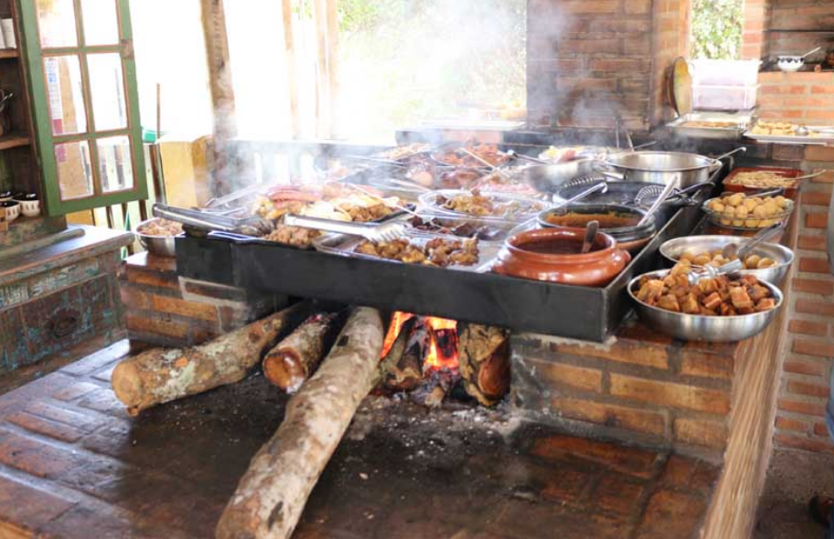
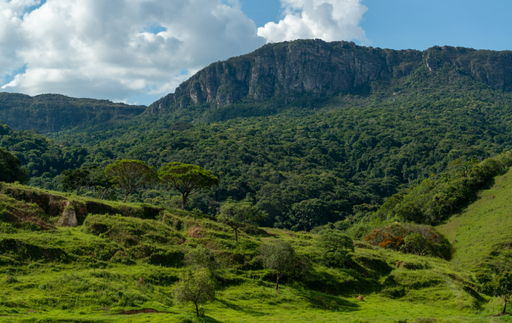

Top 3 benefits of coming to Minas Gerais
Hospitality

“In Minas Gerais, you arrive as a visitor and leave as family. Our warm and welcoming people are always ready with a smile, good conversation, and open arms. Whoever visits Minas never forgets — the genuine kindness stays in your heart forever.”
Tasty Foods
“Get ready to fall in love with the flavors of Minas Gerais! Taste our award-winning cheeses, the irresistible pão de queijo (cheese bread), creamy dulce de leche, and traditional dishes slowly cooked on a wood-burning stove. A true culinary experience that will warm your heart and delight your taste buds!”
Beautiful Landscapes
“Discover the breathtaking nature of Minas Gerais, where majestic mountains, enchanting waterfalls, and scenic trails invite you to unforgettable adventures. Every corner reveals a unique beauty — a perfect harmony between peace, adventure, and the magic of our stunning landscapes.”